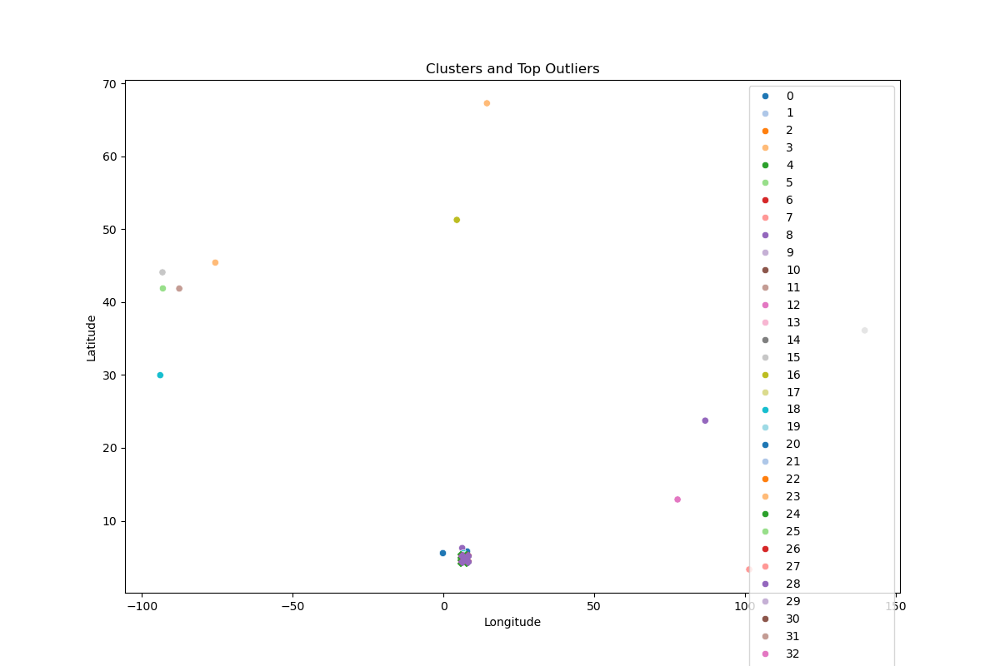
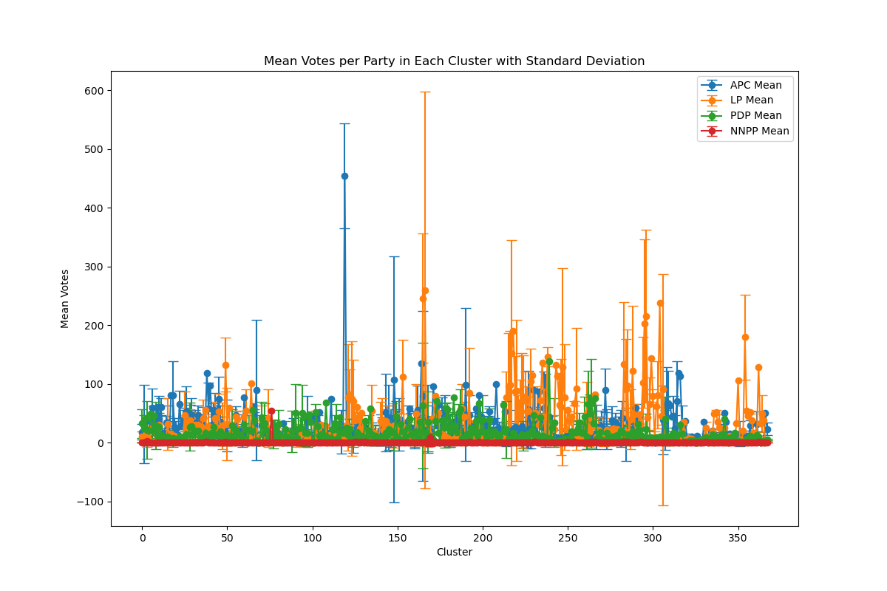
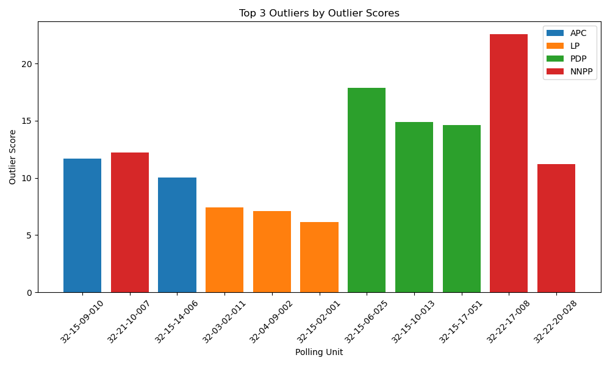

HNG 11: Outlier Detection in Election Data Using Geospatial Analysis
OTUENE HEPHZIBAH REGINALD

Introduction
In the aftermath of a contentious election, concerns over the accuracy and integrity of voting results have surfaced, prompting a rigorous investigation by the Independent National Electoral Commission (INEC). Allegations of vote manipulation and irregularities have underscored the need for a comprehensive analysis to uncover potential anomalies and ensure transparency in electoral outcomes. This report focuses on employing geospatial analysis techniques to identify outlier polling units where voting patterns deviate significantly from their neighboring units.
Methodology
1. Data Collection and Cleaning
- Polling unit data, including latitude and longitude coordinates, were sourced from a provided dataset. Geocoding was conducted using Google Sheets via Awesome Table to augment the dataset with accurate geospatial information.
- The dataset was meticulously cleaned to ensure completeness and accuracy, eliminating any inconsistencies that could affect subsequent analyses.
2. Outlier Detection Using Python on Jupyter Notebook
- The Isolation Forest algorithm was applied to detect anomalies in voting patterns exhibited by each political party across polling units.
- Outlier scores were computed for each polling unit, indicating the degree of deviation from the expected voting behavior based on its features.
3. Geospatial Analysis
- Distances between polling units were calculated to assess spatial relationships and identify neighboring units.
- The top three outliers were determined for each political party based on their outlier scores, providing insights into areas with potentially irregular voting behaviors.
- Closest neighboring polling units to each outlier were identified to contextualize the anomalous voting patterns geospatially.
Summary
The analysis uncovered substantial outliers within polling units associated with each political party. The sorted list of polling units by outlier scores for each party can be found in the accompanying Excel sheet, facilitating a deeper understanding of the electoral landscape.
- cleaned_polling_units.csv: Contains the cleaned dataset with latitude, longitude, and outlier scores for each polling unit.
- sorted_polling_units_by_outlier_scores.xlsx: Excel sheet presenting polling units sorted by outlier scores for APC, LP, PDP, and NNPP.
Conclusion
The geospatial analysis and outlier detection provided valuable insights into potential irregularities within the election data:
- Identification of Significant Outliers: Distinct polling units were identified where voting behaviors significantly deviated from their neighboring units, indicating potential irregularities.
- Analysis of Top Outliers: The top outliers exhibited voting patterns that were markedly different from their surroundings, highlighting areas warranting further scrutiny and investigation.
- Spatial Context: Geospatial visualization and proximity analysis elucidated the spatial distribution of outliers, offering a clear depiction of areas with anomalous voting behaviors.
The visualizations included in this report help illustrate these findings and provide a clear understanding of the spatial distribution of outliers to contribute to the transparency and integrity of electoral processes.
  